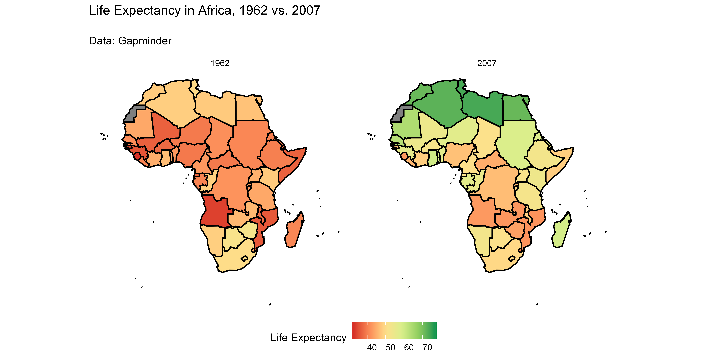
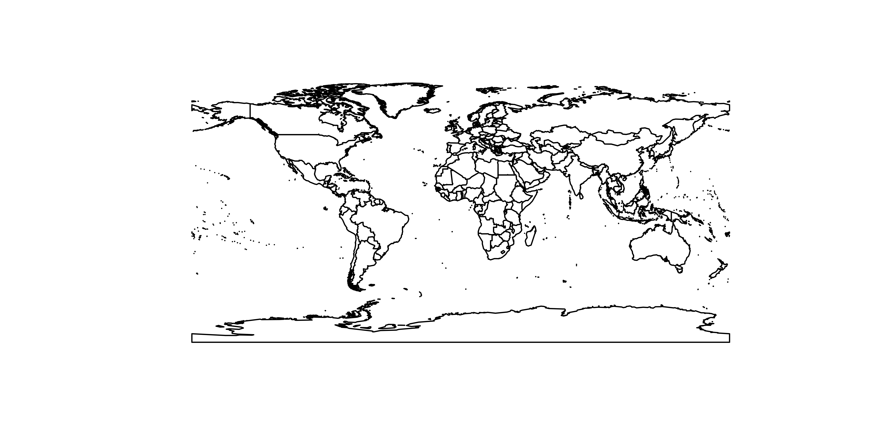
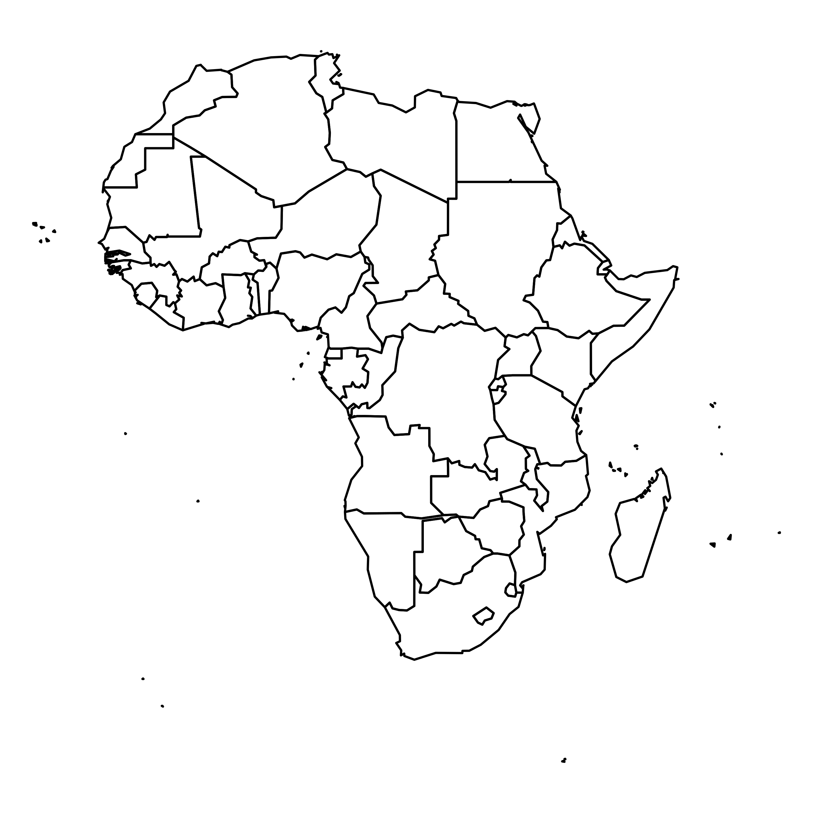
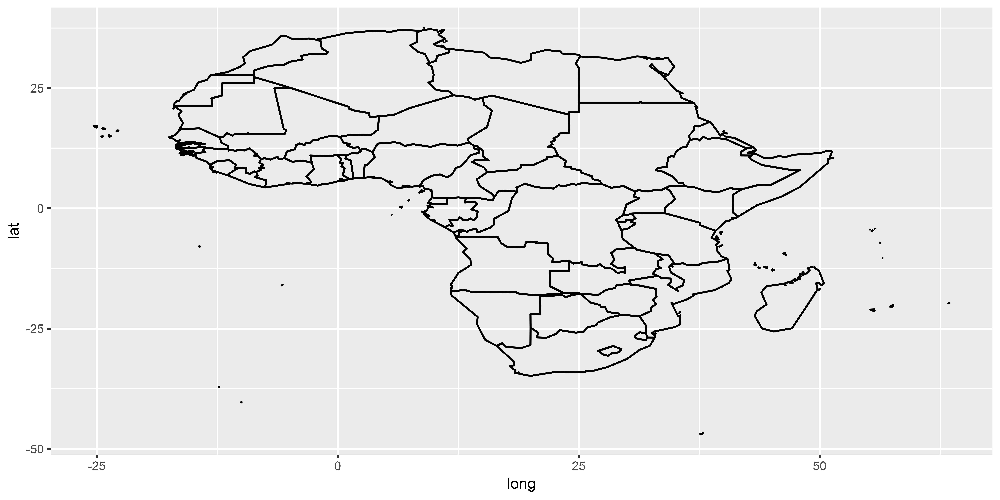
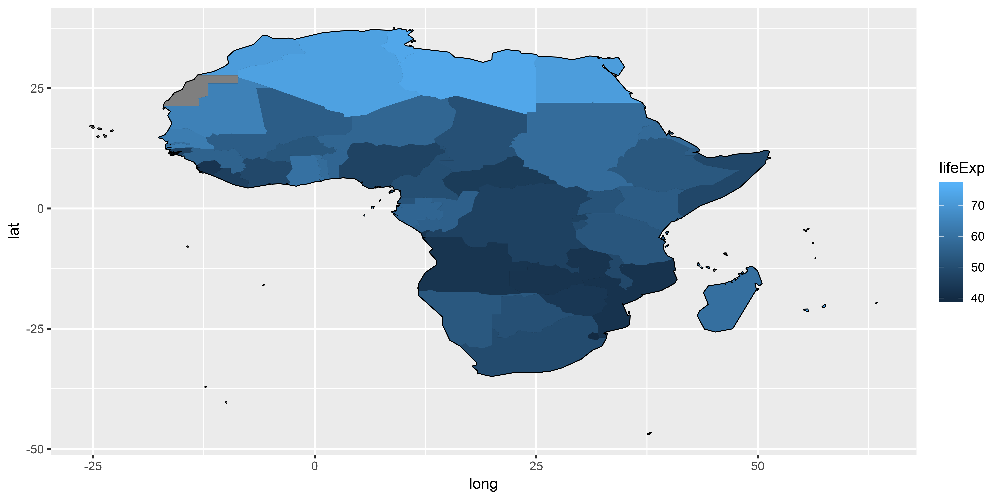
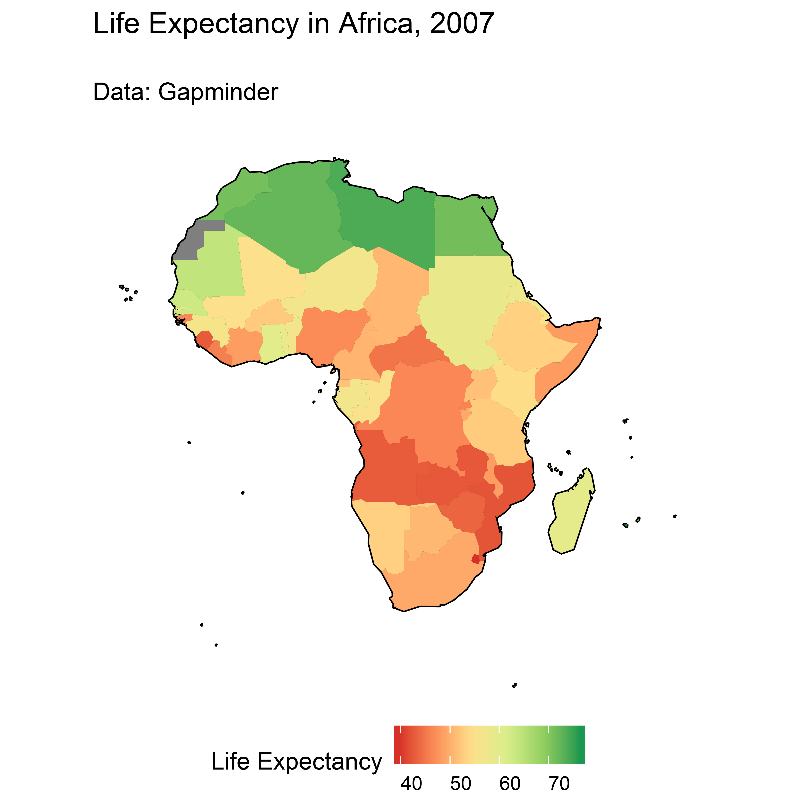
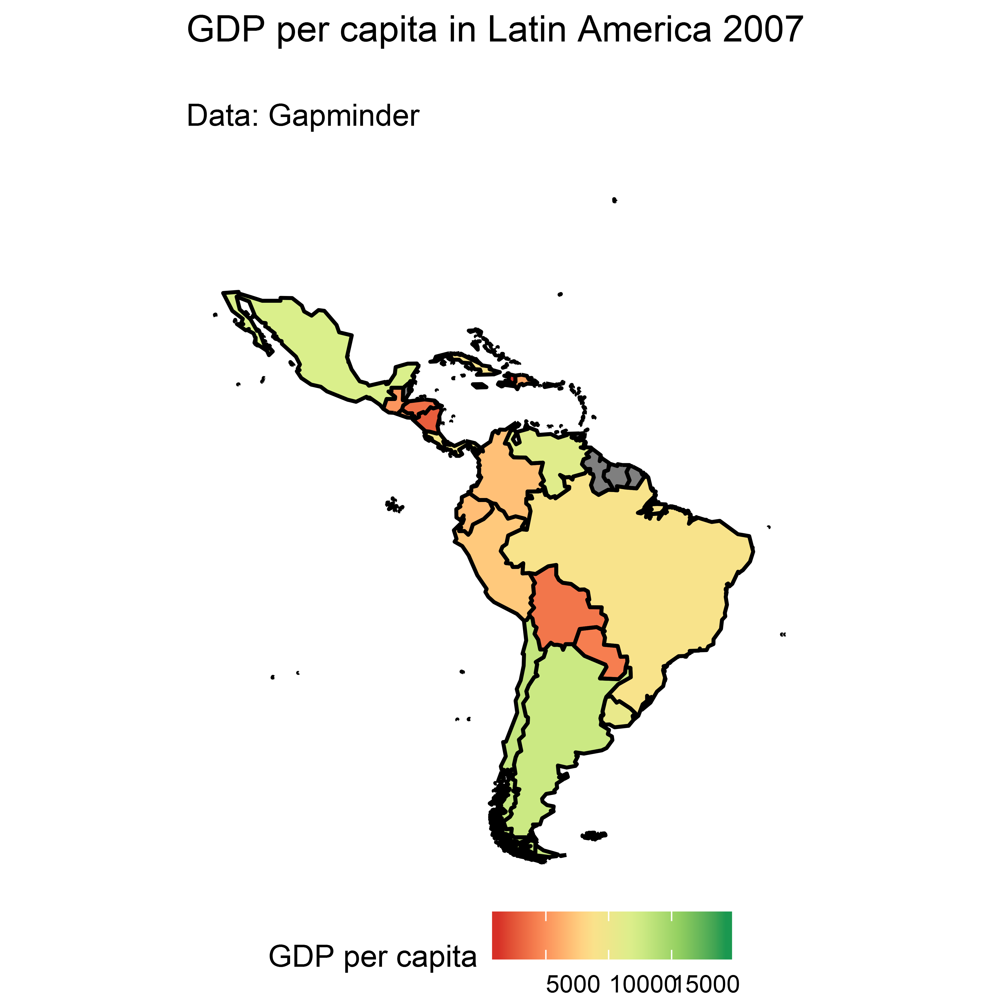

Note: Complex topic, very brief overview only, if you would like to know more, let me know and we organize a separate course!

country_map <- readRDS("path_to_file")Many other sources of spatial data
Generate your own!
Note: you can find the world shapefile on the course website!
library(maptools)
world <- readShapeSpatial("./data/shapefiles/TM_WORLD_BORDERS_SIMPL-0.3.shp")
plot(world)
The world object from the previous slide is a special kind of data frame, a SpatialDataFrame. It works like most other data frames, but has a few quirks.
Manipulating SpatialDataFrames: countrycode()
library(countrycode)
library(maptools)
world <- readShapeSpatial("./data/shapefiles//TM_WORLD_BORDERS_SIMPL-0.3.shp")
world$continent <- countrycode(world$ISO3,
"iso3c", # input format
"continent") # output format
table(world$continent)##
## Africa Americas Asia Europe Oceania
## 57 53 50 51 25Manipulating SpatialDataFrames: subset()
library(countrycode)
library(maptools)
world <- readShapeSpatial("./data/shapefiles//TM_WORLD_BORDERS_SIMPL-0.3.shp")
world$continent <- countrycode(world$ISO3,
"iso3c", # input format
"continent") # output format
africa <- subset(world, continent == "Africa")
par(mar=c(0.1, 0.1, 0.1, 0.1))
plot(africa)
Manipulating SpatialDataFrames: View()
library(countrycode)
library(maptools)
world <- readShapeSpatial("./data/shapefiles//TM_WORLD_BORDERS_SIMPL-0.3.shp")
world$continent <- countrycode(world$ISO3,
"iso3c", # input format
"continent") # output format
View(world@data) # note the '@' as compared to other data frameslibrary(countrycode)
library(maptools)
library(ggplot2)
library(tidyverse)
library(gapminder)
world <- readShapeSpatial("./data/shapefiles//TM_WORLD_BORDERS_SIMPL-0.3.shp")
# create continent identifier
world$continent <- countrycode(world$ISO3,
"iso3c", # input format
"continent") # output format
# subset Africa shape file
africa <- subset(world, continent == "Africa")…continued from previous slide.
# get gapminder data
data("gapminder")
# create country identifier for merging
gapminder$ISO3 <- countrycode(gapminder$country, "country.name", "iso3c")
# only year 2007
gapminder2007 <- gapminder[gapminder$year == 2007, ]
# fortify: bring dataset into shape that ggplot can understand
africa_fort <- fortify(africa, # we use the "africa" shapefile from previous slide
region = "ISO3") # this becomes "id" in the fortified dataset
# join in gapminder data
africa_fort <- left_join(africa_fort,
gapminder2007,
by = c("id" = "ISO3"))africa_map <- ggplot() +
geom_path(data = africa_fort,
aes(x = long, y = lat, group = group),
color = "black")
plot(africa_map)
africa_map <- ggplot() +
geom_path(data = africa_fort,
aes(x = long, y = lat, group = group),
color = "black") +
geom_map(data = africa_fort,
aes(map_id = id,
fill = lifeExp),
map = africa_fort)
plot(africa_map)
africa_map <- ggplot() +
geom_path(data = africa_fort,
aes(x = long, y = lat,
group = group),
color = "black") +
geom_map(data = africa_fort,
aes(map_id = id,
fill = lifeExp),
map = africa_fort) +
# appearance
labs(title = "Life Expectancy in Africa, 2007\n",
subtitle = "Data: Gapminder\n") +
scale_fill_distiller("Life Expectancy",
palette = "RdYlGn",
direction = 1) +
coord_equal() +
theme_void() +
theme(panel.grid = element_blank(),
legend.position = "bottom",
legend.text.align = 0) 
Build a map of
Latin America (hint: countrycode has only “Americas” as continent. How would you filter the world shapefile to leave out the US and Canada?)
Merge in information on GDP per capita in 2007
Plot the map
install.packages(WDI).DT.ODA.ODAT.GN.ZS (net development assistance received as percent of GNI) in the year 2015 and download it in a separate data frameMerge the data frame into the africa shapefile and generate a map of Aid/GNI for africa
library(maptools)
library(sp)
library(countrycode)
library(gapminder)
library(tidyverse)
world <- readShapeSpatial("./data/shapefiles//TM_WORLD_BORDERS_SIMPL-0.3.shp")
world$continent <- countrycode(world$ISO2, "iso2c", "continent")
latam <- subset(world, continent == "Americas")
# remove US and Canada and Greenland
latam <- subset(latam, NAME != "United States" &
NAME != "Canada" &
NAME != "Greenland")
# get gapminder data
data("gapminder")
gapminder$ISO3 <- countrycode(gapminder$country, "country.name", "iso3c")
gapminder2007 <- gapminder[gapminder$year == 2007, ]# Prepare and Merge Data
latam_fort <- fortify(latam, region = "ISO3")
latam_fort <- left_join(latam_fort,
gapminder2007,
by = c("id" = "ISO3"))
# plot
latam_map <- ggplot() +
geom_map(data = latam_fort,
aes(map_id = id, fill = gdpPercap),
map = latam_fort) +
geom_path(data = latam_fort,
aes(x = long, y = lat, group = group),
color = "black") +
labs(title = "GDP per capita in Latin America 2007\n",
subtitle = "Data: Gapminder\n") +
scale_fill_distiller("GDP per capita",
palette = "RdYlGn",
direction = 1) +
coord_equal() +
theme_void() +
theme(panel.grid = element_blank(), legend.position = "bottom",
legend.text.align = 0) 